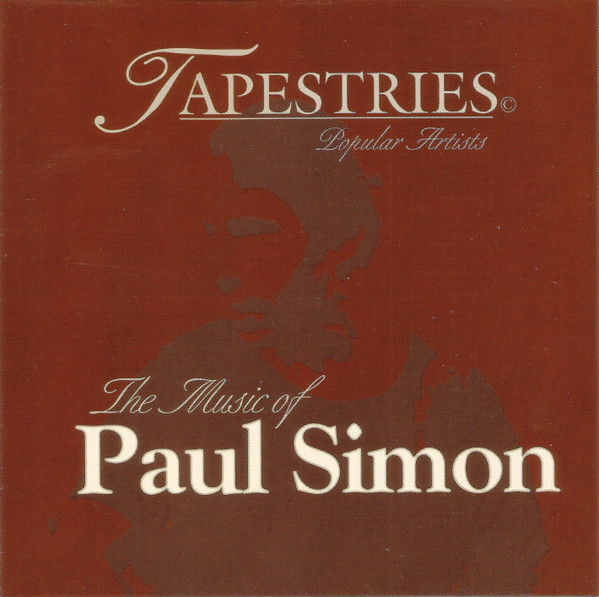

CD
Tapestries: The Music Of Paul Simon
Barry Bekker
Media: VG+ · Sleeve: VG+
—
Personal
Discogs SuggestedCA$17.61
Discogs MedianCA$17.61
Discogs HighCA$17.61
- Physical Copy ID
- BB-CD-0233
- Year
- 1999
- Label
- Holborne Distributing Co. Ltd.
- Catalog #
- TAPCD304
- Country
- CACanada
- Genre / Style
- Pop